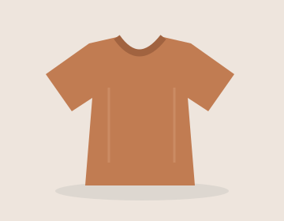

The right product.
Still hard to find.
A nearby merchant may offer what you need, but you may not know the business or what it sells.
Make local options more discoverable. ↗
Discover products and participating merchants in your local market with Pangeabuy—a hyper-commerce platform designed to make local options easier to find.
From everyday essentials to specialised products, explore the possibilities around you and discover a more connected way to shop locally.

Local markets are full of useful products, specialist knowledge and businesses that serve their communities every day.
But a product can be on a neighbourhood shelf without being easy to find online. Pangeabuy is built around the opportunity to bring those local possibilities into view.
A nearby merchant may offer what you need, but you may not know the business or what it sells.
Business pages, websites and messages can make exploring your local choices feel fragmented.
Many merchants rely on foot traffic and referrals. Their products could be useful to someone who has never walked in.
A specialist shop may have exactly the right variation or product knowledge, hidden behind its storefront.
A stronger local shopping experience begins with making local options easier to find.
Hyper-commerce, in everyday language: a more connected way to discover relevant products and participating merchants in your local market.
For customers, a clearer starting point. For merchants, another opportunity to be discovered.
Explore relevant products and participating businesses in a more organised discovery experience.
Review the available listing information and decide which option best suits your needs.
Find participating merchants and follow the purchase journey actually supported for each listing.
This is the official introduction to Pangeabuy. Live product search, local coverage and merchant onboarding are not connected on this website. Examples are illustrative, and launch availability has not been announced.
Start with what you need. Get to know the local options.
Take the next step with the information in front of you.
Explore a product or category you are interested in, using the features available in the platform.
Find participating merchants and relevant listings, depending on coverage and merchant-provided information.
Review the product and merchant information available to understand whether an option meets your needs.
Use the contact, order, payment, pickup or delivery options only where supported for that listing.
From a new charging cable to a fresh notebook.
There's a whole world behind the shopfronts.
Illustrative categories and products. These are examples of possibilities, not live inventory or confirmed launch categories.
There's knowledge behind the counter. A familiar face at the door. People building livelihoods, one useful product and one conversation at a time.
Pangeabuy aims to give participating merchants another way to bring their products into view—and customers another way to find them.
You manage the products, suppliers and everyday work. Potential customers may still not know what you sell.
Pangeabuy is designed to create an additional discovery opportunity for participating merchants, using relevant business and product information.
An opportunity for discovery. No promise of customer growth or sales.
Present useful product information that helps people understand what your business offers.
Create another potential route to people beyond your existing walk-in customer base.
Where implemented and authorised, relevant Stromule information may support customer-facing discovery.
Pangeabuy and Stromule are products of Kumpali Private Limited. Complementary by design, with different jobs to do.
Organise relevant business information, product records, orders and everyday operations.
Explore Stromule ↗Discover relevant products and participating merchants through a local hyper-commerce experience.
Explore Pangeabuy ↗Clear information. Recognisable merchants. Honest expectations about what happens next.
Details should reflect the information actually supplied and supported by the merchant and platform.
Understand who is offering a product, using the business details available on the listing.
Contact, ordering, pickup and delivery depend on the options supported for each listing.
Information sharing depends on the implemented integration, authorisation and applicable policies.
Get to know the idea, the possibilities
and the details that matter.
Pangeabuy is a hyper-commerce platform developed by Kumpali Private Limited, designed to help people discover relevant products and participating merchants in their local market.
Here, it means a shopping and discovery experience focused on relevant products and participating merchants in a local market. The purchase options depend on the capabilities actually supported.
That is the intended experience. Actual options will depend on participating merchants, available listings and local coverage. This introductory website does not provide live product search or location-based results.
This website does not provide checkout or take payments. In a connected shopping experience, the purchase journey will depend on the options supported for the relevant listing and merchant.
No delivery service is offered through this website. Delivery, pickup and other fulfilment options depend on the merchant and the capabilities actually implemented for a listing.
Merchant onboarding is not connected on this website, and registration is not open here. No launch date or official enquiry channel has been supplied for publication. Updated joining information will need to be added when available.
Pangeabuy focuses on customer-facing discovery and commerce. Stromule focuses on business organisation. Where an integration is implemented and authorised, eligible merchant-maintained information can support Pangeabuy discovery. Private business records do not automatically become public.
No. Availability depends on actual merchant participation, location coverage and the information on the platform. Illustrative examples on this website do not represent live inventory or confirmed launch categories.
Relevant merchant-maintained information is intended to support customer-facing discovery where the implementation, permissions and product rules allow it. This site has no connected merchant data or product feed. Platform-specific policies must be published before a live service is introduced.
Discover participating local merchants, explore relevant products
and a more connected way to navigate your local market.